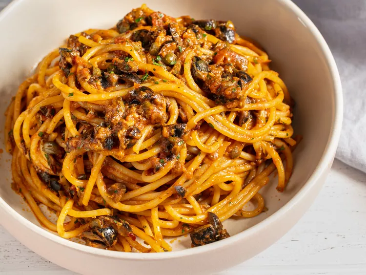

Spaghetti with Tomato & Meat Sauce

Description
You know it. You love it. You want it on a freezing-cold night, when rich
egg and salty pork draped over noodles feel like your only solace. A few
tips from our end: Use mostly yolks, along with a few whole eggs, in your
sauce. This makes it rich yet structured and balanced. A blend of Pecorino
Romano and parm gives you the right hit of sharpness without overwhelming
the other flavors. And cooking over a double boiler means your sauce won’t
curdle.
Ingredients
- 400 g spaghetti
- 400–500 g minced beef
- 1 medium onion, chopped
- 3 cloves garlic, minced
- 2 tbsp olive oil
- 400 g crushed tomatoes
- 2 tbsp tomato paste
- 1 tsp oregano
- 1 tsp basil
- ½ tsp black pepper
- Salt
- ½ tsp red chili flakes — optional
- ½ cup pasta water
- Parmesan cheese
Steps
- Bring a large pot of salted water to a boil.
-
Cook spaghetti according to the packet instructions until al dente.
- Before draining, reserve about ½ cup pasta water.
- Heat olive oil in a pan and sauté onion for 3–4 minutes.
- Add garlic and cook for 30 seconds.
- Add minced beef and cook until browned.
- Add tomato paste and cook for 1–2 minutes.
-
Add crushed tomatoes, oregano, basil, salt, pepper and chili flakes.
- Simmer for 15–20 minutes.
- Add a little pasta water if the sauce is too thick.
- Add cooked spaghetti to the sauce and toss well.
- Serve with grated Parmesan.